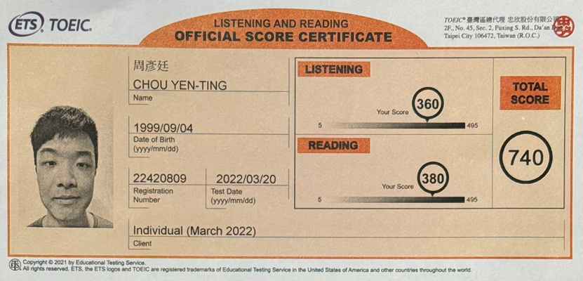
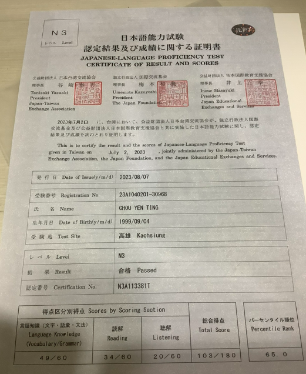
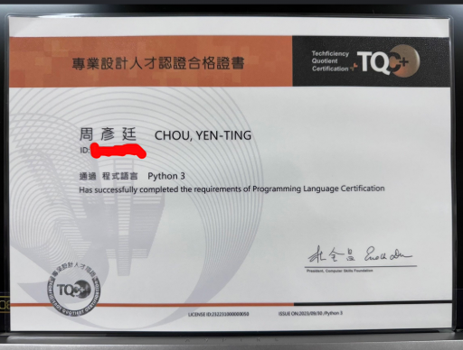
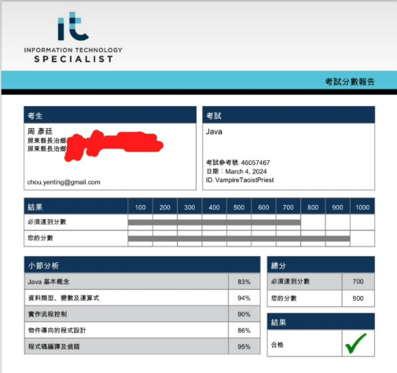
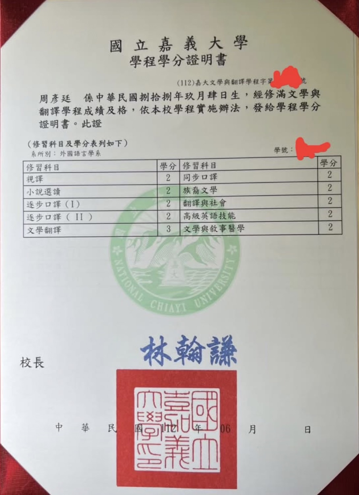
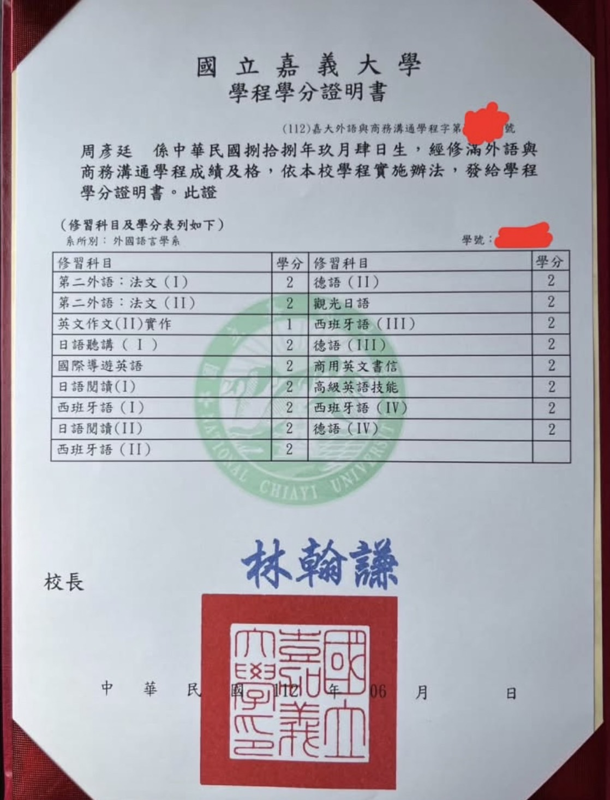
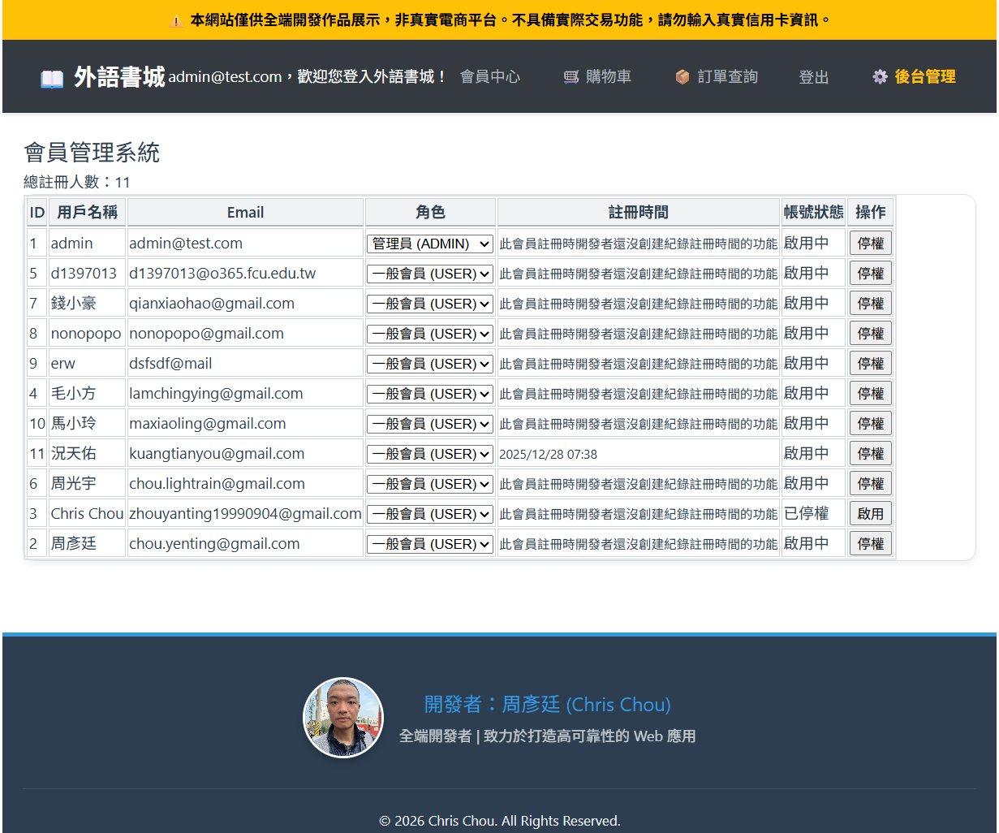
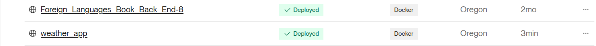
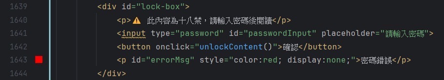
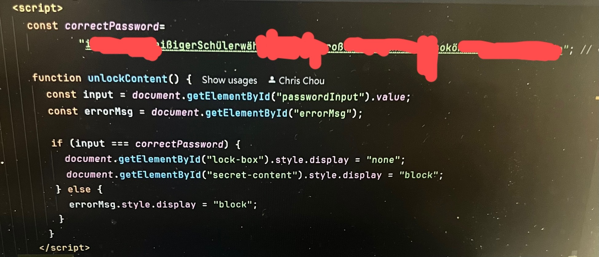

點擊上方的語言選單以切換語言
📧 Email: chou.yenting@gmail.com | 📱 Phone: 0977-203-867
<meta name="viewport">






vercel.json
@ManyToOne(fetch = FetchType.LAZY)
Review
Book
User
@CreationTimestamp
AWAITING_PAYMENT
@Transactional

Language
AxiosError: timeout of 10000ms exceeded
LocalDateTime.now()
@Cacheable

以下所有專案均有以下共通技術與功能：
<iframe>
<a>
AVAudioSession
AudioManager
0x90
Cache-First
Midi.js
Tone.js
note.midi + transpose
ReferenceError
file://
http://
scrollTo
scrollBehavior
onMounted
FB.XFBML.parse()
gh-pages
radial-gradient
@keyframes


我的社交帳號 Social Apps
Instagram
Threads
LINE
YouTube
Dcard
小紅書
🎓 學歷 Education
2025 年 2 月 – 2026 年 1 月
2020 年 9 月 – 2023 年 6 月
2018 年 9 月 – 2020 年 2 月
💻 技術經歷 Technical Experience
後端：Java、Java Servlet、JSP
前端：HTML、CSS、JavaScript
資料庫：MySQL
說明：了解 Client–Server 架構，熟悉 Servlet 與 JSP 協作流程（MVC 初階概念）
後端：Java、Spring Boot（IntelliJ IDEA）
前端：Vue 3、Vite、Pinia（WebStorm）
資料庫：Supabase（PostgreSQL）
測試與除錯：JUnit 單元測試
前端技術：RWD 響應式設計
部署：GitHub Pages
說明：具備前後端分離、RESTful API 建置能力，能完成開發 → 測試 → 佈署全流程
📜 證照 Certifications




語言能力 Languages
📜 大學畢業證書 Bachelor's Degree Certificate


汽車駕照（自排） Car Driving License (Automatic Transmission)
普通重型機車駕照 Motorcycle License (Standard Heavy)
🛠️ 技能 Skills
💡 程式語言 Programming
🖥️ 後端 Back-End
🌐 前端 Front-End
📊 資料庫 Databases
🛠️ 工具與部署 Tools & Deployment
vercel.jsonRewrite 規則，解決 SPA 生產環境刷新 404 問題🤝 軟技能 Soft Skills
🌐 全端實戰作品集 Full-Stack Development Projects
技術棧： Java (Spring Boot 3, Spring Security, JPA) / Vue 3 (Composition API, Pinia) / PostgreSQL / Docker / Render / Vercel / GitHub Pages
採用 JWT (JSON Web Token) 實作前後端分離認證機制，確保 API 存取安全性。憑藉專業的法律與安全意識，主動於系統支付流程中實作 Demo 模式警示機制，明確標註「模擬交易」警語以符合虛擬實作之法律規範，並體現對用戶個人資料安全防護的嚴謹態度。
實作用戶生成內容 (UGC) 模組，透過 JPA 實體關聯 標籤
@ManyToOne(fetch = FetchType.LAZY)建立Review與Book、User間的高效數據鏈條。除了結合 Spring Security 確保只有登入用戶可發布內容外，更實作了 時序排序邏輯 (Chronological Ordering)：確保系統能依據資料庫記錄之精確時間戳 (Timestamp) 自動過濾並呈現「最新評論於首位」。
在資料展現層實作了 數據格式化處理：資料庫底層採用
@CreationTimestamp完整紀錄至分秒之精確值，前端則配合 UI 規範優化為僅顯示日期格式，展現兼顧後端數據完整性與前端視覺簡潔性的設計素養。如下截圖所示：實作 14 種學習語系篩選（下拉式選單）與關鍵字（書名、作者名、國際書號）複合搜尋。針對信用卡與 COD 設計異質 訂單狀態機 (Order State Machine)，包含
AWAITING_PAYMENT原子中間狀態以防止支付漏洞，並應用@Transactional達成庫存自動補償。如下截圖所示：獨立開發會員管理模組，實作基於 RBAC 的權限隔離。提供「一鍵啟用/停權」邏輯以調控帳號生命週期，並針對系統迭代實作資料欄位容錯處理，確保在 Schema Evolution (資料表演進) 時系統仍能穩定運行。如下截圖所示：

於後端定義專屬
LanguageEnum 實體 封裝 14 種語系與顯示名稱。前端實作互動式彈窗表單、封面預覽與上架狀態動態開關，實現對商品價格、庫存與多語系數據的高效調控。如下截圖所示：設計訂單營運中心，採 Master-Detail (主從式資料) 佈局展示收件地址、費用明細與商品項目。管理員可即時追蹤訂單流轉狀態並手動更新，體現處理複雜 UI 數據同步之能力。如下截圖所示：
獨立完成 Docker 容器化部署。針對生產環境下「頁面刷新導致 404」之典型衝突，透過配置
vercel.json的 Rewrite 轉發規則 重新定義請求路徑，確保前後端無縫銜接。技術棧： Java (Spring Boot 3) / Vue 3 (Composition API, Pinia) / Axios / Weather API / Render / GitHub Pages
前端部署於 GitHub Pages、後端部署於 Render，實作動態 Base URL 切換邏輯，並配置 Spring CORS 策略，確保跨域請求安全且可用。
後端串接 WeatherAPI 擷取即時氣象資料，並在 Service 層處理異常與 fallback，確保開發與正式環境皆可穩定運作。
利用 Pinia 建立響應式狀態中心，協調搜尋結果與歷史紀錄組件間的資料同步。結合 H2 嵌入式資料庫 實作搜尋足跡持久化，確保用戶能在應用程式生命週期內追蹤檢索紀錄。
獨立解決 GitHub Pages 子路徑下的 Asset 資源路徑偏移問題 (Vite Base Path)，並撰寫自動化部署腳本提升發布效率，確保 SPA 專案在雲端環境穩定渲染。
針對 Render 免費版伺服器之休眠機制，深入分析並診斷出
AxiosError: timeout of 10000ms exceeded的成因。透過調整前端 Timeout 超時策略 至 60 秒，並結合 UI 層級的 Loading 狀態引導，有效緩解伺服器從休眠狀態喚醒時的時延問題，展現對異構平台通訊穩定性的處理能力。深入分析並定位後端
LocalDateTime.now()產生的 8 小時時差成因，辨識出 Render 雲端環境採用 UTC (格林威治標準時間) 之預設特性。本專案刻意保留此顯示邏輯並於前端實作「技術限制說明」，藉此展示對分散式系統中伺服器原生時區、JVM 預設行為與用戶在地化需求（Localization）差異的敏銳度與專業處理策略。實作基於 Web Share API 與社群平台封裝連結（FB、Line、X）的分享機制。透過動態網址編碼（URL Encoding）確保跨平台傳遞的穩定性，並利用原生 API 提供行動端無縫的分享體驗，展現對產品完整度與用戶成長策略（Growth UX）的實踐。
針對歷史紀錄中可能出現的重複檢索數據，實作了基於 Map 物件的去重演算法 (Deduplication)。確保 UI 層級僅呈現不重複的最近搜尋城市，並透過自定義排序邏輯解決非同步請求下的 UI 標籤跳動問題 (Flickering)，展現對細膩用戶體驗與數據流管理的掌握。
深入診斷並解決 Spring Boot
@CacheableAOP 攔截機制導致 Repository 寫入邏輯失效的問題。透過重新配置業務邏輯與緩存切面，確保在提升查詢效能的同時，依然維持搜尋紀錄的即時持久化（Persistence），展現對框架底層副作用的掌控與複雜數據流一致性的處理能力。實作基於 GitHub Webhooks 觸發之 Render 自動化部署流程。確保後端 Java 業務邏輯變更（如持久化邏輯優化）能透過版本控制系統（Git）同步推播至生產環境，並結合遠端伺服器日誌（Logs）進行實時監控與除錯，展現對完整軟體開發生命週期（SDLC）與自動化運維的理解。如下截圖所示：

📂 前端作品集 Front-End Projects
共通特色
以下所有專案均有以下共通技術與功能：
內容較多的頁面均附有錨點導航，讓瀏覽者能快速跳轉到感興趣的主題。
提供多語言翻譯功能，支持國際化。
整合 Facebook、Line、X (Twitter) 的 URL 動態分享功能。
曾整合 Facebook Comments SDK，實現用戶生成內容 (UGC) 的互動功能（該外掛已於 2026 年 2 月 10 日停用）。
技術棧： HTML5 / CSS3 / 原生 JavaScript (用於靜態 Wiki 建置)
詳細拆解 Spring Boot (RESTful API) 與 Vue 3 (SPA) 的串接流程。針對資工系學士後專班期末專案，紀錄從資料庫設計、Entity/DTO 轉換規範，到 Vercel 與 Render 雲端部署的實戰經驗。
以原生 Web 技術建置高效導覽系統，深入分析 SPA 與傳統 MPA 架構差異。研究範疇涵蓋 RFC 3986 URL 編碼規範、HTTP 狀態碼診斷、以及社群平台追蹤參數對使用者隱私之影響。
落實 JUnit 與 Vitest 單元測試規範，並紀錄獨到的開發細節洞察，例如 HTML 空白折疊機制、Vue DevTools 調試技巧，以及作業系統圖層差異對 Demo 錄影效果的影響分析。
整合外語書電商網站之開發報告與測試文檔。針對桌機與手機端優化 PDF 預覽（使用
<iframe>與<a>標籤），並完整開源 Git Repository 供開發者社群參考。技術棧： HTML5 / CSS3 / Vanilla JavaScript / Web Speech API
深度整合瀏覽器原生 Web Speech API，實作多語系（ja-JP / zh-TW）語音播放。針對教學需求自定義語速（Rate）與音調（Pitch）參數，並透過狀態管理（Cancel/Speak）確保高頻次點擊下的語音流暢度。
針對日文 12 種以上動詞活用（TE/TA/使役被動）及 12 大調樂理術語，設計高易讀性的對照表格結構。結合 CSS 偽元素（::before）實作跨裝置一致的漢堡選單導航介面。
整合 YouTube Iframe API 與原生 Video 標籤，並實作 Lazy Loading 與多媒體響應式適配。針對長句閱讀需求，有意識地調整佈局決策（如移除部分頁面 Viewport 標籤）以確保最佳排版穩定性。
將個人考取 JLPT N3 及 Python 證照 的學習方法數位化，實作包含 20 餘首樂曲的互動歌單與教學文案，展現強大的資訊邏輯分類與跨領域技術整合能力。
技術棧： HTML5 / CSS3 / 原生 JavaScript / PWA (Service Workers) / Web Audio API / MIDI.js
深度對比原生 DOM 操作與 Vue 3 Unmount 銷毀機制。針對原生開發中僅以 CSS 隱藏元素導致影音背景播放與資源佔用的痛點，分析 DOM 節點移除對硬體資源回收的影響，並實作手動資源管理邏輯以優化瀏覽器效能。
探討 iOS
AVAudioSession與 AndroidAudioManager的音訊通道設定。解構為何 Perfect Piano 能避開系統靜音模式，並針對數位樂器「視聽不連貫」現象提出人機互動（HCI）視覺回饋優化方案。解構 MIDI 十六進位數據結構（如
0x90Note On）。實作跨軟體工作流：將原始演奏數據轉譯為 MuseScore 數位樂譜與 Marble Music 動畫，達成聽覺與視覺的數據同步驗證。研究 Progressive Web App (PWA) 規範，實作基於
Cache-First策略的 Service Worker。調試生命週期中的非同步處理邏輯，探討大量影音樣本在有限快取空間（Quota Management）下的攔截策略。針對影音編輯工具進行 Phase Vocoder 與 WSOLA 演算法應用推導。分析音訊壓縮（AAC）在高頻產生的相位失真現象，展現數位訊號處理（DSP）的邏輯分析能力。
實作基於
Midi.js與Tone.js的解析播放系統。開發即時移調演算法（note.midi + transpose），並針對 Web 環境下的非同步競爭問題，實作 時間偏移補償（Time Offset Compensation），解決首音缺失問題並確保 100% 播放還原度。針對多媒體 App 在連續上傳場景下的數據覆蓋衝突進行優化。實作狀態重置機制 (State Reset) 與基於 Tone.now() 的動態排程校準，解決 Web Audio Context 時間軸不一致導致的播放失效問題。
強調演奏能力為數位創作之靈魂。專案作品均採集自個人透過 Perfect Piano 錄製模式 手動彈奏之數據，證明具備操作樂器以獲取精確 MIDI 序列（包含 Time Offset 與力度細節）的專業 Domain Knowledge。
分析並解決 Web 環境下
ReferenceError與 CDN 版本不匹配異常。針對file://與http://協議下的安全沙盒限制進行調試，確保多媒體資源在不同部署環境下的穩定性。運用原生 JavaScript 實作複雜內容過濾系統，管理超過 60 組多媒體索引數據。針對長列表實作響應式顯示優化，顯著提升資訊檢索與渲染效率。
結合 MIDI 時間軸連續性分析與物理證明，建立「演奏來源證明（Provenance）」驗證流程。探討 AI 時代如何透過技術手段確保數位影音內容的真實來源與不可竄改性。
技術棧： Vue 3 (Composition API) / Vue Router / Vite / JavaScript / GitHub Pages
將專案拆分為 3 個頁面層級組件（心得分享、技術分析、演奏展示）與 3 個高重用性共用組件（PageWrapper、SocialShare、TheFooter）。透過高階組件（HOC）封裝與 Vue Slot 技術實現內容分發，展現模組化開發與代碼重用的實踐能力。
以開發者視角逆向分析數位樂器 App 互動邏輯，針對「滑奏（Glissando）」與底層音訊處理（推測如 Web AudioContext 或原生 SoundPool）進行原理推測。同時結合鋼琴背景，深入探討 App 在變調操作上的 UX 限制與演奏連續性問題，體現強大的產品分析與問題洞察力。
封裝
scrollTo邏輯，結合 nextTick 與 scrollIntoView 解決單頁應用（SPA）原生錨點定位失效的痛點，並配置scrollBehavior確保換頁自動置頂，提供與傳統多頁網站一致且流暢的導航體驗。在
onMounted生命週期中精準控管 Facebook SDK 與 Google Translate API 的載入時機。實作腳本重析機制（如FB.XFBML.parse()）確保社交評論功能在動態路由切換後仍能正確初始化與顯示。配置 Vite 資源路徑並採用 Hash History 模式，完美適配 GitHub Pages 靜態空間的限制。整合
gh-pages建立一鍵自動化部署工作流（CI/CD），解決生產環境資源路徑與 404 問題。技術棧： HTML5 / CSS3 (Keyframes, Gradients) / Vanilla JavaScript / SQL Schema Design
系統化呈現《神權崩壞》核心設定。特別針對「神聖力量缺席（Divine Absence）」進行多維度分析，從保持世界觀自由度、避免力量階級崩壞、強化反派張力、以及跨神話體系考據等維度，展現嚴密的邏輯推演與敘事設計能力。
針對不同陣營設計差異化 CSS 視覺語彙。運用
radial-gradient營造低照度場景氛圍，並透過@keyframes實作動態光效（如審判之焰），達成不依賴外部圖檔的高效代碼渲染。透過結構化面板詳列三大主角生理數值（如吸血鬼不流汗、狼人高代謝無排泄等細節）。並針對動態狀態（如德古拉飢餓時的紅眼、芙蕾亞變身後身高由 175cm 增至 220cm 的數值映射）進行精準的視覺對照與邏輯說明。
深入分析 3A 級遊戲 NPC 生成機制，提出模組化組合方案（骨架/臉型/服裝隨機權重），並針對 Mobile 與 PC 平台設計區塊重置與動態串流之效能優化策略。
將主角群生理特徵與不對稱能力轉化為結構化模型。透過「角色技能」與「生理弱點」的獨立關聯實作，精準演釋 4NF (第四正規化) 對多值依賴的處理，並提出「SQL + NoSQL」之混合式存儲架構解決方案。
實作具備驗證邏輯的隱藏內容區塊。特選包含德文特殊字母（ß、ü、ö、ä）之長句作為驗證短語，確保前端邏輯對 UTF-8 擴充字元集 的解析相容性，展現對資料隱私管理與技術細節的嚴謹要求。如下截圖所示：


旨在證明具備將「深層人文考據」轉譯為「硬核技術規格」的實力。透過神聖力量缺席的設定，將故事重心從超自然神蹟轉向「制度腐化與權力鬥爭」，奠定開放世界敘事之骨架。
此專案為遊戲的世界觀建構與系統建模。內容聚焦於敘事邏輯架構與技術規格定義，旨在展示將抽象概念轉化為具體技術規格 (TDD) 的分析實力。
技術棧： HTML / CSS / 原生 JavaScript / SVG 向量繪圖
整合人類學數據與流行文化觀察，深入分析「種族置換（Race-swapping）」改編邏輯、印度族群（ANI/ASI）辨識誤區、紅髮/深髮高加索人遺傳特徵，以及日系作品如何透過「金髮碧眼」作為視覺符號來凸顯異國感，展現極強的邏輯架構與敘事能力。
捨棄外部圖表庫，手寫 SVG 向量圖形 呈現複雜基因流向，並建構結構化數據矩陣對照表，達成零資源依賴（Zero-dependency）的高效渲染。
利用原生 JS 實作參數封裝，開發互動式角色牆系統（支援即時縮放與層級管理），並精確控制 CSS 權重以達成多層級嵌套導覽。
整合 YouTube、Facebook、Bilibili 多方 API，並實作 Fluid Media Container 技術處理 30+ 影音資源，解決行動端與桌機端的響應式佈局一致性。
全站導入 Lazy Loading（延遲載入） 技術處理大量高解析度圖像，顯著降低 LCP（最大內容繪製）時間，並實作模組化 CSS 提升樣式復用率。
技術棧： Vanilla JavaScript / Chart.js / CSS3 Flexbox & Grid / 響應式佈局
運用 **JavaScript** 程式化物理動能公式（$E = \frac{1}{2}mv^2$），開發互動式能量計算器，並透過 **Chart.js** 雷達圖將抽象的視覺設計轉化為量化指標。
以經典格鬥遊戲《Dragon Fist Two: Battle for the Blade》為案例，分析其**碰撞偵測範圍（Reach）**、**幀率攻速（Frame Data）**與**戰鬥鎖定（Locking）**機制，並錄製 8 部實測 Demo 驗證大、小尺寸武器在數值設計上的 Trade-off。
透過 HTML Table 實作「多維度對照表」，對比中世紀歷史現實（如衛生條件、黑死病、獵巫）與奇幻作品的浪漫化濾鏡，並結合社群議題分析現代與古代口腔衛生之科學差異。
結合**運動科學（短跑與武術經驗）**與**物理力學**，對 ACG 角色設定進行可行性壓力測試，展現辨識複雜系統中「邏輯矛盾」與「數值不一致」的開發者敏銳度。
針對大量自製影音資源實作 **Lazy Loading（延遲載入）** 與響應式 Iframe 管理，確保在不同裝置下皆具備 16:9 比例的流暢播放體驗。
技術棧： HTML5 / CSS3 / 原生 JavaScript (Vanilla JS) / 多媒體架構管理 / RWD
獨立策劃並開發包含 16 個關聯 HTML 檔案的數位專題。針對龐大內容體系，實作 Vanilla JS 動態摺疊導覽系統，透過 DOM 狀態控制有效優化 UI 空間配置，在維持極高資訊密度的同時，確保導航的簡潔性與跨裝置閱讀體驗。
全站整合超過 30 處異質影音資源（YouTube、Bilibili）。實作 onloadedmetadata 事件監聽功能，動態抓取影片原始解析度並執行 UI 自動縮放優化。針對大量影音與圖文節點，透過 CSS 媒體查詢 (RWD) 確保內容在各種螢幕尺寸下皆能維持高品質的視覺比例。
全面運用語意化 HTML5 標籤（Article, Section, Blockquote）規劃長文本內容，在不依賴第三方框架的前提下，極大化靜態頁面的資訊結構感與閱讀層次。
技術棧：HTML5 / CSS3 / 原生 JavaScript (ES6+) / 多源影音串流實作 / 響應式佈局 (RWD)
運用物理連通管原理論證全球大洪水之不合理性、以人口統計學解構宗教宇宙觀的管理漏洞，並結合神經科學挑戰輪迴假說與「清心寡慾」教條之邏輯悖論。
針對 12 個子專案規劃「多級錨點連結」導覽系統，整合 YouTube、Bilibili 及自託管影音串流，實作 Lazy Loading 與多媒體 API 整合，確保大量數據與影音在異質網路環境下的流暢載入。
深度剖析基督教的亞洲起源與歐洲審美演化（如金髮碧眼天使之重構），並透過人類學視角糾正「亞洲人等同黃種人」等族群誤區。
運用操控性招募理論分析現場傳教心理，揭露權力者利用「偽道德」轉嫁社會成本的現象，並從環境工程角度實證祭祀行為對 PM2.5 的實質衝擊。